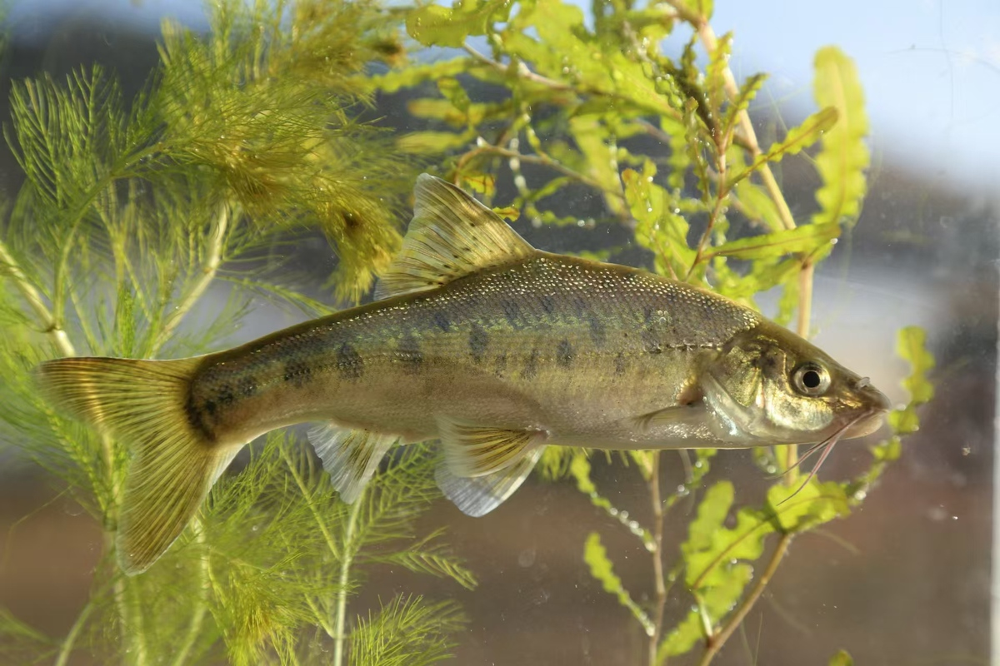

📇
基础名片
Basic Info
滇池金线鲃
学名：Sinocyclocheilus grahami ，别名：金线鱼、波罗鱼、小洞鱼、菠萝鱼
地位：滇池特有珍稀土著鱼类，云南四大名鱼之首，中国特有洞穴鱼类
保护级别：国家二级重点保护野生动物、极危 (CR)
学名：Sinocyclocheilus grahami ，别名：金线鱼、波罗鱼、小洞鱼、菠萝鱼
地位：滇池特有珍稀土著鱼类，云南四大名鱼之首，中国特有洞穴鱼类
保护级别：国家二级重点保护野生动物、极危 (CR)
✨
外形特征
Morphology
外形特征
小型淡水鱼，背部青灰或黄褐色，腹部淡黄，体侧散布不规则黑斑
头部布有白色感觉孔，连成线状纹路
体被圆鳞，侧线鳞（61–69 枚）显著大于其他鳞片，游动时侧线反光如金线
小型淡水鱼，背部青灰或黄褐色，腹部淡黄，体侧散布不规则黑斑
头部布有白色感觉孔，连成线状纹路
体被圆鳞，侧线鳞（61–69 枚）显著大于其他鳞片，游动时侧线反光如金线
🌍
分布与栖息
Habitat
分布与栖息
国内仅存于云南哀牢山、无量山，如景东、双柏、新平、屏边等地
栖息于滇池周边未受污染的支流、龙潭、溶洞、暗河等封闭小水体
半穴居，喜清澈、低温、流水环境，对水质、水温、溶氧要求严苛
国内仅存于云南哀牢山、无量山，如景东、双柏、新平、屏边等地
栖息于滇池周边未受污染的支流、龙潭、溶洞、暗河等封闭小水体
半穴居，喜清澈、低温、流水环境，对水质、水温、溶氧要求严苛
🍃
习性与繁殖
habits
习性与繁殖
集群活动，昼伏夜出，白天藏于洞穴，夜间外出觅食
食性：杂食性。幼鱼主食浮游动物、水生昆虫幼虫；成鱼捕食虾类、小鱼，兼食藻类
繁殖：繁殖期于每年12月到次年3月，繁殖季洄游至溶洞、暗河的清泉流水处产卵
集群活动，昼伏夜出，白天藏于洞穴，夜间外出觅食
食性：杂食性。幼鱼主食浮游动物、水生昆虫幼虫；成鱼捕食虾类、小鱼，兼食藻类
繁殖：繁殖期于每年12月到次年3月，繁殖季洄游至溶洞、暗河的清泉流水处产卵
🛡️
保护现状与措施
measure
保护现状与措施
野生成熟个体约3,000–4,000尾，它是中国云南滇池流域特有物种，无国外分布
保护：栖息地保护、人工繁育突破、增殖放流
威胁：污染、围湖造田、外来种入侵、过度捕捞
野生成熟个体约3,000–4,000尾，它是中国云南滇池流域特有物种，无国外分布
保护：栖息地保护、人工繁育突破、增殖放流
威胁：污染、围湖造田、外来种入侵、过度捕捞

滇池金线鲃种群数量变化监测
滇池金线鲃种群数量增长趋势